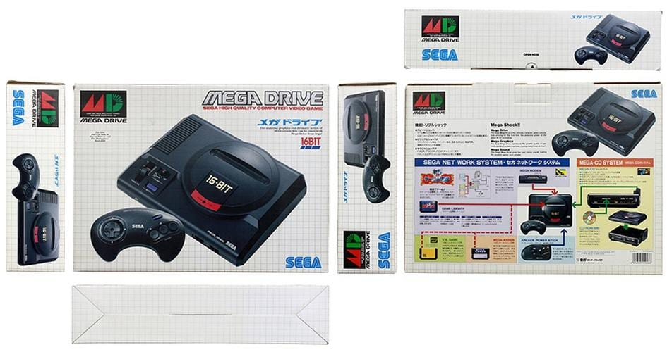

世嘉 Mega Drive / Genesis

1988 年在日本上市的世嘉 Mega Drive（北美称 Genesis），以摩托罗拉 68000 加 Z80 双处理器、强劲的 FM 音源与《索尼克》等硬派大作开启 16 位机时代，与超级任天堂的「主机大战」至今被津津乐道，是 90 年代初游戏文化的旗帜。
客观评测
世嘉 Mega Drive 于 1988 年 10 月 29 日在日本上市（北美 1989 年称 Genesis），采用摩托罗拉 68000（约 7.6MHz）与 Zilog Z80 双处理器，64KB+64KB 内存，VDP 最高约 320×224，YM2612 FM 音源，卡带扩展、可外接 Mega-CD。首发约 21,000 日元，生命周期销量约 3000 万–4000 万台（口径不一）。
主观点评
Mega Drive 属于那种「听起来就不一样」的主机。YM2612 的电吉他音色、Blast Processing 的营销梗、《索尼克》开场的绿丘冲刺，构成了 90 年代初最酷的游戏气质。美版 Genesis 造型凌厉，日版黑色机身低调；收一台一版机配六键手柄，格斗与射击依旧爽快。与超任相比存量价格更友好，是 16 位收藏最实惠的入场券。
优点与不足
- 68000+Z80 架构性能强劲，街机移植效果领先同代
- YM2612 FM 音源音色硬朗，摇滚风格配乐辨识度极高
- 手柄手感扎实，六键版格斗游戏操作爽快
- 初期日版/美版手柄仅三键，格斗游戏操作受限
- 硬件改版繁多（Model 1/2、Nomad 等），选购辨识成本高
- 与超任的独占阵容相比，第一方大作节奏较依赖第三方
参数规格
| 上市时间 | 1988 年 10 月 29 日（日本） |
|---|---|
| 产品类型 | 16 位家用游戏主机（卡带式） |
| 主处理器 | 摩托罗拉 68000 |
| 主频 | 约 7.6MHz |
| 副处理器 | Zilog Z80（约 3.58MHz，负责音频与兼容） |
| 内存 | 64KB 主内存 + 64KB 显存 |
| 图形芯片 | VDP 显示处理器 |
| 分辨率 | 最高约 320×224（NTSC） |
| 色彩 | 512 色调色板，同屏数十色 |
| 声音 | Yamaha YM2612 FM 音源 + SN76489 PSG |
| 卡带 | 卡带插槽（容量数十 KB 至数 MB） |
| 手柄 | 三键手柄（后期六键手柄） |
| 视频输出 | AV 复合视频、RF 射频、S 端子（视版本） |
| 扩展接口 | 扩展口（接 Mega-CD 等） |
| 兼容性 | 通过 Power Base Converter 兼容 Master System 游戏 |
| 机身材质 | 黑色工程塑料机身 |